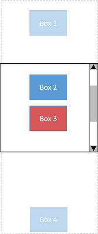
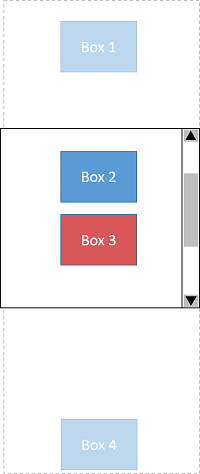

This specificaiton is rather long. To make it easier to read and focus on a particular area, a few checkboxes are provided below. Checking them hides part of the specification. This is only meant as a reading aid, the specification remains the full document.
1. Introduction
This section is not normative.
Historically, most browsers have not offered features to let users move the focus directionally. Some, such as TV browsers, have enabled users to move the focus using the arrow keys out of necessity, since no other input mechanism is available on a typical TV remote control.
Others, have enabled different key combinations to control spatial navigation,
such as pressing the Shift key together with arrow keys.
This ability to move around the page directionally is called spatial navigation (or spatnav for short).
Spatial navigation can be useful for a webpage built using a grid-like layout,
or other predominantly non linear layouts.
The figure below represents a photo gallery arranged in a grid layout.
If the user presses the Tab key to move focus,
they need to press the key many times to reach the desired element.
Also, the grid layout may arrange the layout of elements independently of their source order.
Therefore sequential navigation using the Tab key makes focus navigation unpredictable.
In contrast, spatial navigation moves the focus among focusable elements
depending on their position
allowing it to address problems encountered with sequential navigation.

While arrow keys are naturally suited to control spatial navigation, no previous specification describes how that should work, or how it may be controlled. This specification introduces a processing model for spatial navigation, as well as APIs enabling authors to control and override how spatial navigation works.
Note: As a general principle, keyboard navigation, and spatial navigation in particular, should be possible to use and control without JavaScript, and declarative solutions are therefore preferred. Since spatial navigation depends on layout, that means CSS is typically the right mechanism to define spatial navigation related controls. However, in the spirit of the Extensible Web Manifesto [EXTENSIBLE], we feel it is important to provide the right JavaScript primitives to let authors experiment and explore the problem space. More declarative features may be added later, based on feedback and experience acquired through such JavaScript usage.
Note: A few features are marked at-risk. The editors of this specification believe they represent an important part of the user or author experience of the features defined in specification. At the same time, the core functionality of this specification can be implemented without implementing these so it seems possible that implementors may choose to down-prioritize them to reduce the scope of a first implementation. While it is hoped that these features will be implemented as well, they are marked at-risk in recognition that they might not be at first.
2. Module interaction
This document depends on the Infra Standard [infra].
The keywords "MUST", "MUST NOT", "REQUIRED", "SHALL", "SHALL NOT", "SHOULD", "SHOULD NOT", "RECOMMENDED", "NOT RECOMMENDED", "MAY", and "OPTIONAL" are to be interpreted as described in RFC 2119. [RFC2119]
3. Overview
This section is not normative.
Using a UA-defined mechanism
(typically arrow keys, possibly in combination with modifier keys like Shift or Control),
the user may ask the User Agent to navigate in a particular direction.
This will either
move the focus from its current location to a new focusable item in the direction requested,
or scroll if there is no appropriate item.
More specifically, the User Agent will first search for visible and focusable items in the direction indicated within the current spatial navigation focus container (by default the root element, scrollable elements, and iframes, but other elements can be made into spatial navigation focus containers using the spatial-navigation-contain property).
If it finds any, it will pick the best one for that direction, and move the focus there.
If it does not, it will scroll the spatial navigation focus container in the requested direction instead of moving focus. Doing so may uncover focusable elements which would then be eligible targets to move the focus to next time spatial navigation in the same direction is requested.
If the spatial navigation focus container cannot be scrolled, either because it is not a scrollable element or because it is already scrolled to the maximum in that direction, the User Agent will select the next spatial navigation focus container up the ancestry chain, and repeat the process of looking for eligible focus targets, selecting the best one if there’s any, scrolling if not, going up the ancestry chain if it cannot scroll, until it has either moved focus, scrolled, or reached the root.
preventDefault()),
and if desired to provide an alternate action,
such as using calling the focus() method on a different
element of the author’s choosing.
To help authors write such alternate actions, and as part of exposing underlying platform primitives as per the Extensible Web principles, this specification also defines JavaScript APIs that expose key constructs of the underlying model.
See §6.2 Navigation Event Types for details about the various events, and §5 JavaScript API for details about the JavaScript API.
 

On the left of figure 2, "Box 2" is focused.
Pressing the ArrowDown key moves focus to
"Box 3" without scrolling because "Box 3" is visible in the scrollport of the spatial navigation focus container.


On the first of figure 3, under "Box 3", there isn’t any visible element in the scrollport.
Therefore, the effect of pressing the ArrowDown is to scroll down, as shown in the second.
The next press of the ArrowDown key makes "Box 4" come into the scrollport,
and the focus will move to it when there is additional pressing the ArrowDown, as the fourth.
This example uses the markup as follows:
#scroller { width: 700px; height: 700px; overflow-x: hidden; overflow-y: auto; } .box { width: 150px; height: 110px; background-color: blue; } .box:focus { background-color: red; }
<div id="scroller"> <div class="box" tabindex="0">Box 1</div> <div class="box" tabindex="0">Box 2</div> <div class="box" tabindex="0">Box 3</div> <div class="box" tabindex="0">Box 4</div> </div>
4. Triggering Spatial Navigation
When the user triggers spatial navigation in a given direction, the User Agent must run the spatial navigation steps in that direction.
This specification does not define what UI mechanism User Agents should offer to users to trigger spatial navigation. This intentionally left for User Agents to decide.
Although it is possible for User Agents to implement the processing model and APIs defined by the specification without giving any direct means to the user to trigger spatial navigation themselves, this specification recommends not to do so: User Agents should offer a means for users to trigger spatial navigation directly, without having to use the APIs.
Note: Conversely, authors should assume that spatial navigation may be triggered by the UA in response to user actions even if the author has not invoked any of the APIs.
Regardless of the actual mechanism chosen to trigger spatial navigation, the following requirements apply:
-
If the mechanism the user must use to trigger spatial navigation would normally fire a
UIEvent, then that event must be fired prior to running the spatial navigation steps and these steps must not be run if that event’s canceled flag gets set.Gaming devices may trigger spatial navigation based on pressing the D-pad. This would result in firing a keydown event with the key set to one ofArrowDown,ArrowLeft,ArrowRight, orArrowUp, followed if not canceled by running the spatial navigation steps, including firing the relevantNavigationEvents.A User Agent on a desktop computer that triggers spatial navigation using the arrow keys of the keyboard would follow the same sequence.
-
If the mechanism the user must use to trigger spatial navigation would in some contexts trigger other actions, the User Agent should in these contexts give priority to these other actions and execute them instead of spatial navigation. It must not trigger both.
In a User Agent that triggers spatial navigation using the arrow keys without modifier keys, and uses these same arrow keys to move the text insertion caret when an editable element is focused, the arrow keys should by default to moving the caret. Spatial navigation would only be triggered by the arrow keys when the focused element is not editable, or when it is editable but the caret cannot move any further in the requested direction.An exception is made for scrolling: since spatial navigation itself handles scrolling (in addition to moving the focus) User Agents should not offer the same mechanism to trigger both spatial navigation and a scrolling behavior separate from spatial navigation. UAs may however, offer a way for the user to switch between different modes, or offer both based on different UI mechanism.
A User Agent may have a setting to let the user choose between using the arrow keys without modifier keys for spatial navigation or for scrolling. Another one may offer scrolling on arrow keys without modifiers, and spatial navigation on arrow keys when pressed together with theShiftkey, or on theWASDkeys. Offering only spatial navigation or only scrolling as responses to pressing arrow keys would also be possibilities.
5. JavaScript API
5.1. Triggering Navigation Programmatically
This api is clearly useful for testing purposes. It may also be useful for authors, but the use cases are less strong. Maybe this should be moved to WebDriver and be a testing-only api. Maybe it is fine as is.
enumNavigationDirection{"up","down","left","right","forward","backward"}; partial interface Window { voidnavigate(NavigationDirectiondir); };
navigate() method must follow these steps:
-
If dir is
"up","down","left", or"right", run the spatial navigation steps in direction dir. -
Else if dir is
"forward"run the sequential navigation steps requesting the next control. -
Else if dir is
"backward", run the sequential navigation steps requesting the previous control.
5.2. Low level APIs
Note: These APIs are designed to be low level constructs following the processing model closely. As such, they should be easy to use by authors who want to extend or override the way spatial navigation works.
enumSpatialNavigationDirection{"up","down","left","right", }; enumFocusableAreaSearchMode{"visible","all"}; dictionaryFocusableAreasOptions{ FocusableAreaSearchModemode; }; dictionarySpatNavSearchOptions{ required SpatialNavigationDirectiondir; sequence<Node>?candidates; Node?container; }; partial interface Element { NodegetSpatnavContainer(); sequence<Node>focusableAreas(optional FocusableAreasOptionsarg); Node?spatNavSearch(SpatNavSearchOptionsarg); };
enumSequentialNavigationDirection{"forward","backward"}; partial interface Element { Node?seqNavSearch(SequentialNavigationDirectiondir); };
Note: The way the direction is expressed allows us to expand to more than 4-way navigation later of if this is found necessary. More directional keywords or a numerical angle could be added.
Note: the focusableAreas() and getSpatnavContainer() methods are at-risk.
getSpatnavContainer() method must follow these steps:
-
Return the element if it is a spatnav container, or the nearest ancestor of the element that is a spatnav container, or the document if the nearest spatnav container is the viewport.
focusableAreas() method must follow these steps:
-
Let v be
falseif the argument’smodeattribute if present and equal to"all", ortrueotherwise. -
Let areas be the result of finding focusable areas within the element with the visibleOnly argument set to v
-
Let anchors be a clone of areas, with every focusable area which is not itself a Node replaced with its DOM anchor.
-
Return anchors
spatNavSearch() method must follow these steps:
-
Let d be the argument’s
dirattribute -
If the argument’s
candidatesattribute is notnull, then let areas be that attribute, else, let areas be the result of finding focusable areas within the argument’scontainerattribute is notnull, or the element’s nearest spatnav container ancestor -
Return the result of selecting the best candidate within areas in direction d from the element
Note: When neither a container nor a list of candidates is provided,
this only searches through the visible focusable areas of the nearest spatnav container ancestor. If none are found, this does not climb further up the ancestry chain,
and the result will be null.
seqNavSearch() method must follow these steps:
-
Let d be the argument
-
Let s be
sequentialif the element is a browsing context or if the element is in its control group’s sequential focus navigation order; otherwise, let s beDOM. -
Return the result of running the sequential navigation search algorithm with the element as its starting point argument, d as its direction argument, and s as the selection mechanism argument.
document.addEventListener("navbeforescroll", function(e) {
var container = e.relatedTarget;
var areas = container.focusableAreas({ mode: "all" });
if (areas.length == 0)) { return; }
e.preventDefault();
var t = e.target.spatNavSearch({
dir: e.dir,
candidates: areas
});
t.focus();
});
document.addEventListener("navbeforefocus", function(e) {
e.preventDefault();
if (e.dir === "forward" || e.dir === "backward" ) {
e.dir="top";
}
var t = e.relatedTarget;
while (t.isSameNode(t.getSpatnavContainer())) {
var areas = t.focusableAreas();
if (areas.length == 0)) { break; }
t = t.spatNavSearch({
dir: e.dir,
candidates: areas
});
}
t.focus();
});
The focus can still be moved outside by sequential navigation,
mouse interaction,
programatic calls to focus()…
document.addEventListener("navnotarget", function(e) {
e.preventDefault();
var c = e.relatedTarget;
var areas = c.focusableAreas({mode: "all"});
if (areas.length == 0)) {
switch(e.dir) {
case "down":
c.scrollTop=0;
break;
case "up":
c.scrollTop=c.scrollHeight;
break;
case "right":
c.scrollLeft=0;
break;
case "left":
c.scrollLeft=c.scrollWidth;
break;
}
} else {
var t = c.spatNavSearch({
dir: e.dir,
candidates: areas
});
t.focus();
});
6. Navigation Events
6.1. Interface NavigationEvent
The NavigationEvent interface provides specific contextual information associated with sequential or spatial navigation.
To create an instance of the NavigationEvent interface, use the NavigationEvent constructor,
passing an optional NavigationEventInit dictionary.
[Constructor(DOMStringtype, optional NavigationEventIniteventInitDict)] interfaceNavigationEvent: UIEvent { readonly attribute NavigationDirectiondir; readonly attribute EventTarget?relatedTarget; }; dictionaryNavigationEventInit: UIEventInit { required NavigationDirectiondir; EventTarget?relatedTarget= null; };
6.2. Navigation Event Types
This section and its subsections are not normative.
The Navigation event types are summarized below. For full normative details, see §7 Processing Model.
6.2.1. navbeforefocus
The navbeforefocus event occurs before spatial or sequential navigation changes the focus.
| Type | navbeforefocus
|
|---|---|
| Interface | NavigationEvent
|
| Bubbles | Yes |
| Cancelable | Yes |
| Attributes of the event |
|
ArrowRight key.
For the sake of keeping the description simple,
this example assumes a UA where spatial navigation is triggered using arrow keys.
| Event type | KeyboardEvent.key
| Notes | |
|---|---|---|---|
| 1 | keydown | ArrowRight
| MUST be a key which can activate spatial navigation, such as the arrow keys, or spatial navigation is not activated. |
| 2 | navbeforefocus | Sent if the candidates for spatial navigation is not null,
or this is not generated.
| |
| 3 | focusin | Sent before the target element receives focus. | |
| 4 | focus | Sent after the target element receives focus. |
6.2.2. navbeforescroll
The navbeforescroll event occurs before spatial navigation triggers scrolling.
| Type | navbeforescroll
|
|---|---|
| Interface | NavigationEvent
|
| Bubbles | Yes |
| Cancelable | Yes |
| Attributes of the event |
|
ArrowDown key in the situation like the following figure.
For the sake of keeping the description simple,
this example assumes a UA where spatial navigation is triggered using arrow keys.

| Event type | Event target | relatedTarget
| Notes | |
|---|---|---|---|---|
| 1 | keydown | #box2
| N/A | MUST be a key which can activate spatial navigation, such as the arrow keys, otherwise spatial navigation is not triggered. |
| 2 | navbeforescroll | #box2
| #scrollContainer
| Sent if #scrollContainer doesn’t contain any candidate in the scrollport,
otherwise this would not be generated.
|
After navbeforescroll is fired, pressing the ArrowDown key triggers scrolling
down the scrollbar like in the figure below:
This example uses the markup as follows:
#scrollContainer { width: 700px; height: 700px; overflow-x: hidden; overflow-y: auto; } .item { width: 150px; height: 110px; background-color: blue; } .item:focus { background-color: red; }
<div id="scrollContainer"> <div id="box1" class="item" tabindex="0">Box 1</div> <div id="box2" class="item" tabindex="0">Box 2</div> <div id="box3" class="item" tabindex="0">Box 3</div> </div>
6.2.3. navnotarget
The navnotarget event occurs before going up the tree to search candidates in the nearest ancestor spatnav container when spatial navigation has failed to find any candidate within the current spatnav container.
If the spatnav container is scrollable, the event occurs when there isn’t any candidate in it and it cannot be scrolled at the same time.
| Type | navnotarget
|
|---|---|
| Interface | NavigationEvent
|
| Bubbles | Yes |
| Cancelable | Yes |
| Attributes of the event |
|
ArrowDown key in the situation like the following figure.
For the sake of keeping the description simple,
this example assumes a UA where spatial navigation is triggered using arrow keys.
| Event type | Event target | relatedTarget
| Notes | |
|---|---|---|---|---|
| 1 | keydown | #box2
| N/A | MUST be a key which can activate spatial navigation, such as the arrow keys, otherwise spatial navigation is not triggered. |
| 2 | navnotarget | #box2
| #scrollContainer
| Sent if #scrollContainer doesn’t contain any candidate and
cannot be scrolled,
otherwise this would not be generated.
|
| 3 | navbeforefocus | #box2
| #box3
| Sent if the candidates in #container is not null,
otherwise this would not be fired.
|
| 4 | focusin | #box3
| N/A | Sent before the target element receives focus. |
| 5 | focus | #box3
| N/A | Sent after the target element receives focus. |
The result of this example is the figure as follows:

This example uses the markup as follows:
#container { width: 900px; height: 1400px; } #scrollContainer { width: 700px; height: 700px; overflow-x: hidden; overflow-y: auto; } .item { width: 150px; height: 110px; background-color: blue; } .item:focus { background-color: red; }
<div id="container"> <div id="scrollContainer"> <div id="box1" class="item" tabindex="0">Box 1</div> <div id="box2" class="item" tabindex="0">Box 2</div> </div> <div id="box3" class="item" tabindex="0">Box 3</div> </div>
7. Processing Model
This section defines the corresponding normative behavior and aims for as much detail as necessary to fully define the behavior.
The following currently does not account for the proposed overscroll-behavior specification. <https://github.com/wicg/spatial-navigation/issues/19>
The following does not take shadow dom into account. <https://github.com/wicg/spatial-navigation/issues/21>
7.1. Groupings of elements
While the general model for spatial navigation is to work from the layout of the document and the relative position of focusable elements, the User Agent is required to prioritize finding elements from a local logical grouping, only looking for focusable elements outside of the grouping if a suitable one cannot be found inside it (see §7.2 Navigation for details).
Such groupings are called spatial navigation focus containers (or spatnav containers for short).
By default, spatnav containers are established by:
-
The viewport of a browsing context (not limited to the top-level browsing context)
7.2. Navigation

There can be a spatial navigation starting point. It is initially unset. The user agent may set it when the user indicates that it should be moved.
Note: For example, the user agent could set it to the position of the user’s click if the user clicks on the document contents.
If the UA sets both a spatial navigation starting point and a sequential focus navigation starting point, they must not be set differently.
The focusing steps should probably reset the spatial navigation starting point <https://github.com/wicg/spatial-navigation/issues/23>
-
Let startingPoint be the DOM anchor of the currently focused area of a top-level browsing context.
-
If the spatial navigation starting point is not
nulland it is inside startingPoint then set startingPoint to the spatial navigation starting point -
If eventTarget is the Document or the document element, set eventTarget be the body element if it is not
nullor to the document element otherwise. -
If startingPoint is either a scroll container or the document
-
Let candidates be the result of finding focusable areas within startingPoint
-
-
If candidates contains at least 1 item:
-
Let bestCandidate be the result of selecting the best candidate within candidates in direction starting from startingPoint
-
Fire an event named navbeforefocus at eventTarget using
NavigationEventwith itsdirset to direction andrelatedTargetset to bestCandidate and with it’sbubblesandcancelableattributes set totrue, and return if the result isfalse -
Run the focusing steps for bestCandidate and return
-
-
Else if eventTarget can be manually scrolled:
-
Fire an event named navbeforescroll at eventTarget using
NavigationEventwith itsdirset to direction andrelatedTargetset to eventTarget and with it’sbubblesandcancelableattributes set totrue, and return if the result isfalse -
Directionally scroll the element eventTarget in direction and return.
-
-
Else, fallback to the next step
-
-
-
Let container be the nearest ancestor of eventTarget that is a spatnav container.
-
Loop: Let candidates be the result of finding focusable areas within container
-
If candidates is
null:-
If container is a scroll container that can be manually scrolled:
-
Fire an event named navbeforescroll at eventTarget using
NavigationEventwith itsdirset to direction andrelatedTargetset to container and with it’sbubblesandcancelableattributes set totrue, and return if the result isfalse -
Directionally scroll the element container in direction and return.
-
-
Else,
-
Fire an event named navnotarget at eventTarget using
NavigationEventwith itsdirset to direction andrelatedTargetset to container and with it’sbubblesandcancelableattributes set totrue, and return if the result isfalse. -
-
If container is the document element of the top-level browsing context, then return. The User Agent may transfer focus to its own controls (if any) honouring direction.
-
Else, if container is the document element of a nested browsing context then:
-
Set startingPoint to container’s browsing context container
-
Set eventTarget be startingPoint
-
Set container to the nearest ancestor of startingPoint that is a spatnav container.
-
Return to the step labeled loop.
is it sane from a security standpoint that this propagates up from iframes? <https://github.com/wicg/spatial-navigation/issues/28>
-
-
Else, set container to its closest ancestor that is itself a spatnav container and return to the step labeled loop.
-
-
-
-
Let bestCandidate be the result of selecting the best candidate within candidates in direction starting from startingPoint
-
Fire an event named navbeforefocus at eventTarget using
NavigationEventwith itsdirset to direction andrelatedTargetset to bestCandidate and with it’sbubblesandcancelableattributes set totrue, and return if the result isfalse -
Run the focusing steps for bestCandidate and return
5.5. if candidate is not
null, Fire an event named navbeforefocus at eventTarget usingNavigationEventwith itsdirset to direction andrelatedTargetset to candidate and return if the result is false
This is a monkeypatch on [HTML]. Eventually this should be upstreamed. <https://github.com/wicg/spatial-navigation/issues/27>
7.3. Focus Navigation Heuristics
Note: The following algorithms are inspired from Chrome’s implementation as well as from the old WICD Spec. Implementors who find better approaches or refinements to these approaches are strongly encouraged to provide feedback and help improve this specification in order to maximize interoperability. In particular, divergences in how User Agents find focusable areas may cause some elements to be focusable in some User Agents but not in others, which would be bad for users.
All geometrical operations in this section are defined to work on the result of CSS layout, including all graphical transformations, such as relative positioning or [CSS-TRANSFORMS-1].
The boundary box of an object is defined as follows:
-
if the object is a point, the boundary box is that point
-
if the object is an element, the boundary box is the border box of the element’s principal box.
-
if the object is a focusable area which is not an element, the boundary box is the axis-aligned the bounding box of that focusable area
CSS should have a term for “border box taking into account corner shaping properties like border-radius”. <https://github.com/w3c/csswg-drafts/issues/2324>
To find candidates within a containing element C,
with an optional visibleOnly argument that defaults to true,
follow the following steps:
-
Let focusables be the set of all the focusable areas that are descendants of C.
-
The UA should remove from focusables elements whose
tabindexattribute is set to a negative value.Note: This is a "SHOULD" in order to mirror the exclusion of elements with negative tabindex from the sequential focus navigation order as defined in HTML Standard §the-tabindex-attribute.
-
If visibleOnly is
false, return focusables.Note: focusables may be empty
-
Let insideArea be
-
the optimal viewing region of C if C is a scroll container,
-
the viewport of C’s browsing context if C is a Document,
-
the border box of C otherwise.
-
-
Let visibles be the subset of items in focusables whose boundary box is at least partly within insideArea.
Excect for elements that are in the currently non visible part of a scroller, spatial navigation does not automatically exclude elements which cannot be clicked on, for example due to being obscured by some other element. To avoid breaking assumptions in the application logic if a user actually focuses and activates such an element, and to avoid confusing users by focusing invisible or apparently unreachable elements, authors should use make these elements unreachable to spatial navigation using the same best practices as for making elements unreachable to sequential navigation, such as usingtab-index="-1"or theinertattribute. -
Return visibles.
Note: visibles may be empty
To select the best candidate within a set of candidates in a direction dir, starting from starting point, follow the following steps:
-
If candidates is empty, return
null -
If candidates contains a single item, return that item
-
Let insideArea be
-
the optimal viewing region of starting point if starting point is a scroll container,
-
the viewport if starting point is a Document,
-
the border box of starting point otherwise.
-
-
Let insiders be the subset of candidates items who are descendants of starting point and whose boundary box’s
-
top edge is below the top edge of insideArea if D is
down -
bottom edge is above the bottom edge of insideArea if D is
up -
right edge is left of the right edge of insideArea if D is
left -
left edge is right of the left edge of insideArea if D is
right
Note: this sub-setting is necessary to avoid going in the opposite direction than the one requested.
-
-
-
If insiders is non empty
-
Let closest subset be the subset of insiders whose boundary box’s
-
top edge is closest to the top edge of insideArea if D is
down -
bottom edge is closest to the bottom edge of insideArea if D is
up -
right edge is closest to the right edge of insideArea if D is
left -
left edge is closest to the left edge of insideArea if D is
right
-
-
If closest subset contains a single item, return that item, else return the first item of closest subset in document order
-
-
Else
-
Set candidates be the subset of its items whose boundary box’s geometric center is within the closed half plane whose boundary goes through the geometric center of the starting point and is perpendicular to D.
-
For each candidate in candidates, find the points P1 inside the boundary box of starting point and P2 inside the boundary box of candidate that minimize the distance between these two points, when distance is defined as follows:
- distance:
- A + B + C - D
- A:
- The euclidian distance between P1 and P2
- B:
- The absolute distance in the dir direction between P1 and P2
- C:
- The absolute distance in the direction which is orthogonal to dir between P1 and P2
- D:
- The square root of the area of intersection between the boundary boxes of candidate and starting point
-
Return the item of the candidates set that has the smallest distance.
-
-
8. Controlling spatial navigation through declarative means
8.1. Creating additional spatnav containers: the spatial-navigation-contain property
| Name: | spatial-navigation-contain |
|---|---|
| Value: | auto | contain |
| Initial: | auto |
| Applies to: | all elements |
| Inherited: | no |
| Percentages: | n/a |
| Media: | visual |
| Computed value: | as specified |
| Canonical order: | per grammar |
| Animation type: | discrete |
- auto
- If the element is a scroll container then it establishes a spatial navigation focus container, otherwise it does not.
- contain
- The element establishes a spatial navigation focus container
Note: In addition, as per §7.1 Groupings of elements, the viewport of a browsing context (not limited to the top-level browsing context) also establishes a spatial navigation focus container.
In this case, the grid is quite sparse, so if the user tries to move down from "Foo", focus would be moved to "Next Week", as it is objectively closer in the down direction. The same is true for going down from "Bar": the focus would be moved to "Previous Week".
<div>
<button>Previous Week</button>
<table>
<tr><td><th>M<th>T<th>W<th>T<th>F<th>S<th>S
<tr><td>0-6<td><td><td><td><td><td><td><a href="#">Foo</a>
<tr><td>6-9<td><a href="#">Bar</a><td><td><td><td><td><td>
<tr><td>9-12<td><td><td><td><td><td><td>
<tr><td>12-18<td><td><td><td><td><td><td>
<tr><td>18-21<td><td><td><td><td><td><td>
<tr><td>21-24<td><td><td><td><td><td><a href="#">Baz</a><td>
</table>
<button>Next Week</button>
</div>
table, td, th {
border-collapse: collapse;
border: solid 1px;
}
td { width: 12.5%; }
div {
display: grid;
grid-template-columns: auto 1fr auto;
}
button { align-self: center; }
Because the elements in the table are semantically related to eachother, the author may want to provide a different navigation experience giving priority to movements inside the grid once you have focused one of its items.
Adding table { spatial-navigation-contain: contain; } to the stylesheet
would result it this behavior.
It would still be possible to move the focus out of the table,
for example by going right from "Foo".
Since there is nothing in the grid that is to the right,
the focus would move to "Next week".
However, if the user navigates down from "Foo", there is something inside the grid, so focus will move there without considering things that are outside.
Note: the spatial-navigation-contain property is at-risk.
Appendix A. Scroll extensions
This section proposes a few extensions to CSS that should be integrated in upstream specifications, but are hosted here until then.
Terminology like this should be in [CSSOM-VIEW-1], [CSS-OVERFLOW-3], [CSS-SCROLL-SNAP-1]. <https://github.com/w3c/csswg-drafts/issues/2322>
An element e can be manually scrolled in a given direction d if:
-
The principal box established by e is a scroll container, and
-
if d is
upordown, the computed value of the overflow-y property is not , and -
if d is
leftorright, the computed value of the overflow-x property is not , and -
e is not at the scroll boundary in the direction d
-
e is not snapped to the last mandatory snap point in direction d
[CSSOM-VIEW-1] should probably define how to perform a scroll in a given direction without an explicit position. Until then, we roll our own. <https://github.com/w3c/csswg-drafts/issues/2323>
To directionally scroll an element e in direction dir:
-
Let d be a User Agent defined distance.
-
Let x be e’s current scroll position on the x axis.
-
Let y be e’s current scroll position on the y axis.
-
Use the scroll an element algorithm from [CSSOM-VIEW-1] on e to
-
(x, y - d) if dir is
up -
(x, y + d) if dir is
down -
(x - d, y) if dir is
left -
(x + d, y) if dir is
right
-
Acknowledgements
The editors of this specification would like to thank the following individuals for their feedback and contributions (in alphabetical order):
-
Alice Boxhall
-
Brial Kardell
-
Elika Etemad
-
Hugo Holgersson
-
Hyojin Song
-
Junho Seo
-
Rob Dodson
-
Seungcheon Baek